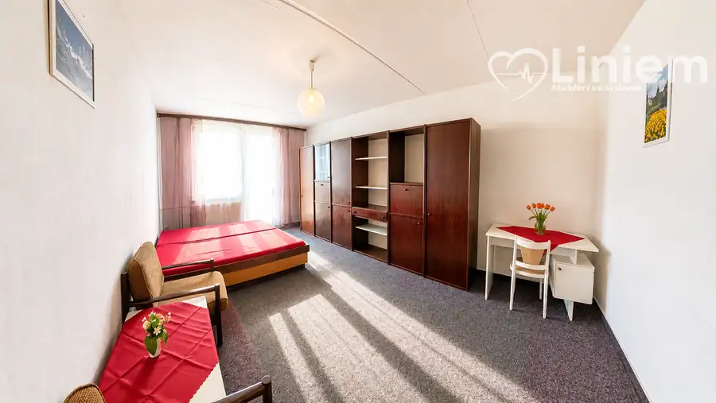
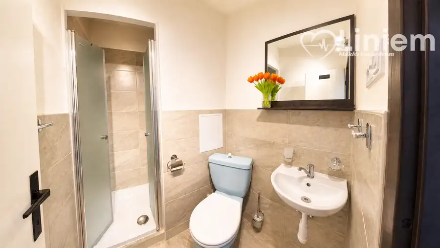
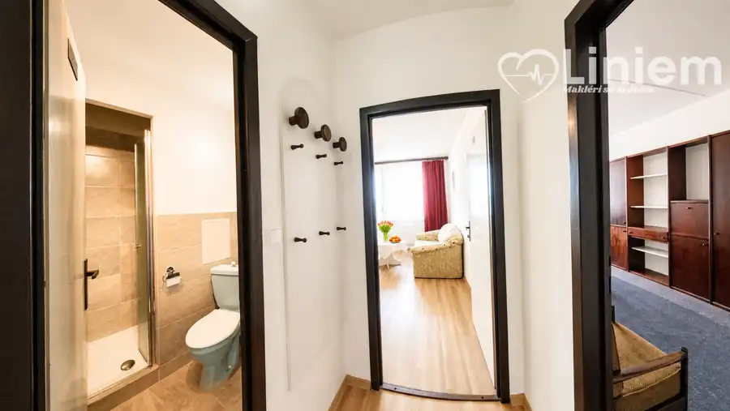

NA PRENÁJOM: 2-izbový byt v Nitre – Krškany
Nitra




- Dispozícia2-izbový
- Plocha38 m²
- Poschodie4. z 7
- StavČiastočná rekonštrukcia
- VlastníctvoOsobné
O nehnuteľnosti
Vhodný aj pre študentov, pracujúcich alebo párPonúkame na prenájom priestranný 2-izbový byt v hotelovom komplexe v Nitre, časť Krškany. Byt je ideálny pre jednotlivca, pár, pracujúcich, firemného klienta, ale aj pre študentov, ktorí hľadajú praktické bývanie s dobrou dostupnosťou a kompletným zázemím.Byt sa nachádza v objekte s výťahom, recepciou a bezpečným vstupom, čo poskytuje pohodlie aj vyšší štandard bývania.Dispozícia a vybavenie bytu:• samostatná spálňa• obývacia izba s kuchynským kútom• nová kuchyňa so vstavanými spotrebičmi• kúpeľňa s toaletou• vstupná chodba• prípojka na práčku• 2 balkóny• internet v cene nájmuByt ponúka dostatok priestoru na pohodlné bývanie aj štúdium. Vďaka praktickej dispozícii je vhodný aj pre dvoch študentov alebo mladý pár.Parkovanie a služby v objekte:• voľné parkovacie miesta pri objekte• možnosť prenájmu garáže po dohode• výťah• recepcia• bezpečný vstup do objektuVýhody bývania:• vhodné aj pre študentov• vhodné pre jednotlivca, pár alebo pracujúcich• internet v cene nájmu• praktická dispozícia• 2 balkóny• možnosť parkovania pri objekte• dobré zázemie v rámci komplexuCena nájmu je od 600 € mesačne podľa vybavenia a dĺžky prenájmu a počtu osôb.Pri podpise zmluvy sa hradí:• rezervácia• depozit• nájomAk hľadáte praktický 2-izbový byt v Nitre, ktorý je vhodný aj pre študentov alebo pracujúcich, zavolajte mi a dohodnite si obhliadku.Peter Čoros, RSc.Liniem reality📞 0948 571 309✉️ coros@liniemreality.sk
Parametre
- Cena vrátane energií
- Nie
- Druh
- 2 izbový byt
- Dátum zverejnenia
- 06. 05. 2026
- Plocha balkónu v m2
- 6 m²
- Podlažie
- 4
- Počet izieb / miestností
- 2
- Počet nadzemných podlaží
- 7
- Stav nehnuteľnosti
- Čiastočná rekonštrukcia
- Telekomunikácie
- Internet
- Typ
- Prenájom
- Vlastníctvo
- Osobné
- Vybavenie
- Balkón, Terasa, Výťah
- Vykurovanie
- Ústredné
- Zariadenie
- Zariadené kompletne
- Úžitková plocha
- 38 m²
Kde to je


Mohlo by Vás zaujímať
 PozemokNové
245 000 €Na predaj - unikátny pozemok pre developéra aj milovníka prírody
Báb
2878 m²
PozemokNové
245 000 €Na predaj - unikátny pozemok pre developéra aj milovníka prírody
Báb
2878 m²
 Komerčné priestoryNové
1 750 €Administratívne priestory s parkovaním pre kamióny priamo pri R1
Nitra
115 m²
Komerčné priestoryNové
1 750 €Administratívne priestory s parkovaním pre kamióny priamo pri R1
Nitra
115 m²
 PozemokNové
204 000 €Na predaj veľký stavebný pozemok pre 1–4 rodinné domy – Veľké Zálužie
Veľké Zálužie
1584 m²
PozemokNové
204 000 €Na predaj veľký stavebný pozemok pre 1–4 rodinné domy – Veľké Zálužie
Veľké Zálužie
1584 m²